El inventario no coincide
Se vende algo que ya no está, o sobra mercancía que nadie contó.
Hecho para una tienda o un negocio mediano que hoy anota en cuadernos, en Excel o en un programa que se queda corto. Funciona en el computador del negocio, aunque se vaya la internet.
Es un control interno. No envía factura electrónica a la DIAN y no reemplaza el facturador electrónico. La tirilla que imprime es el comprobante de su negocio.
Pide tu cotización
Se vende algo que ya no está, o sobra mercancía que nadie contó.
Fiados y abonos quedan en notas sueltas y al final no se sabe quién debe.
Al final del día el efectivo no coincide con lo vendido y toca adivinar.
Cada foto es la ventana completa, con nombres de ejemplo. En el celular, tóquela para abrirla en grande y poder leerla.
Código del producto, Enter, cantidad, Enter. Hay seis ventas abiertas a la vez (Alt+1 a Alt+6) para no hacer esperar al siguiente cliente. El atajo está escrito en el botón.


Cada producto tiene código, precios y unidad. Clientes y proveedores quedan con su identificación, teléfono y dirección.
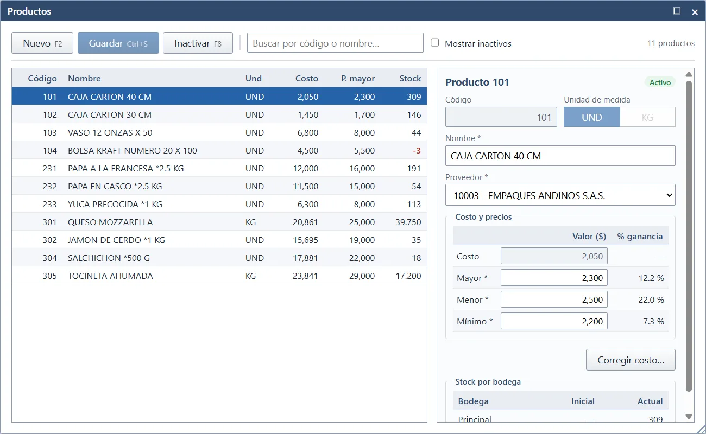
Al guardar la factura del proveedor, la mercancía suma en la bodega y queda lo que se le debe.
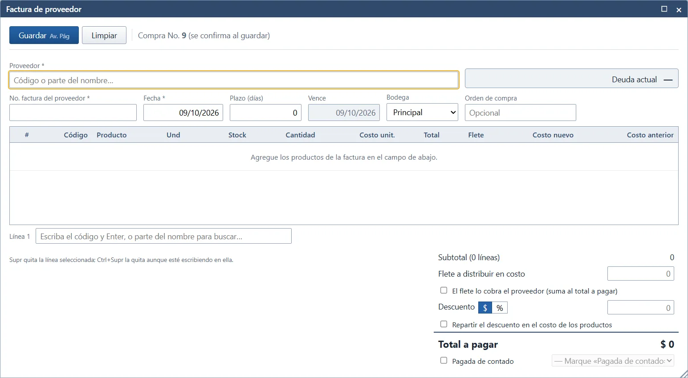
Al guardar la venta puede salir la tirilla de 80 mm. Si la impresora está apagada, la factura ya quedó guardada y se puede reimprimir después.
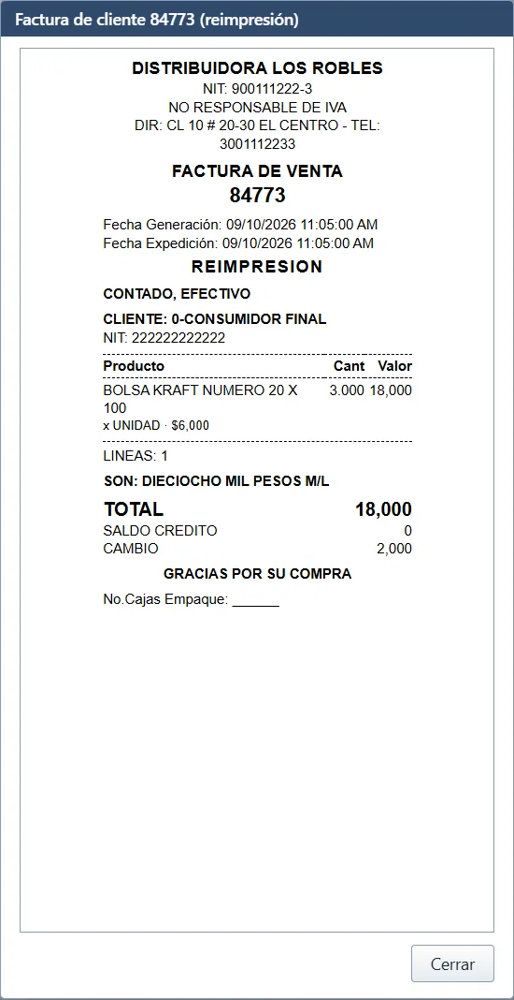
Cuentas por cobrar muestra la deuda. El abono se reparte en las facturas del cliente.
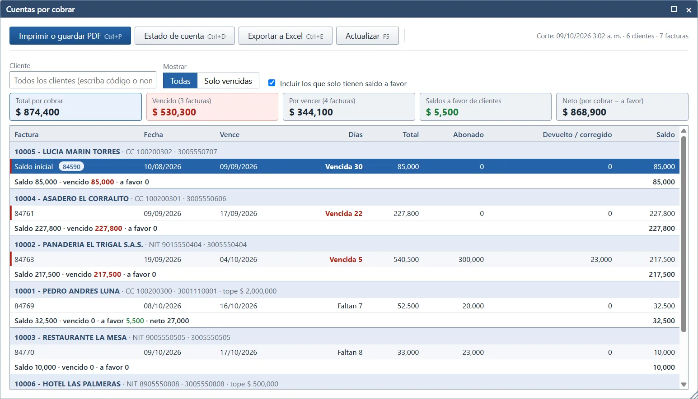
Cuentas por pagar y el abono al proveedor cierran el otro lado de la cartera.
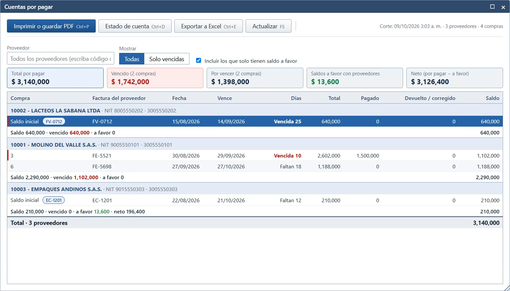
No hay un número suelto que se pueda cambiar a mano. El kardex muestra entradas, salidas y el saldo de cada producto.
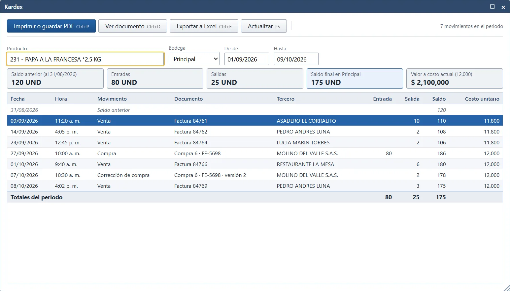
Una factura no se borra: se corrige o se anula, y la devolución devuelve la mercancía y ajusta lo que el cliente debe. Todo queda en el historial.
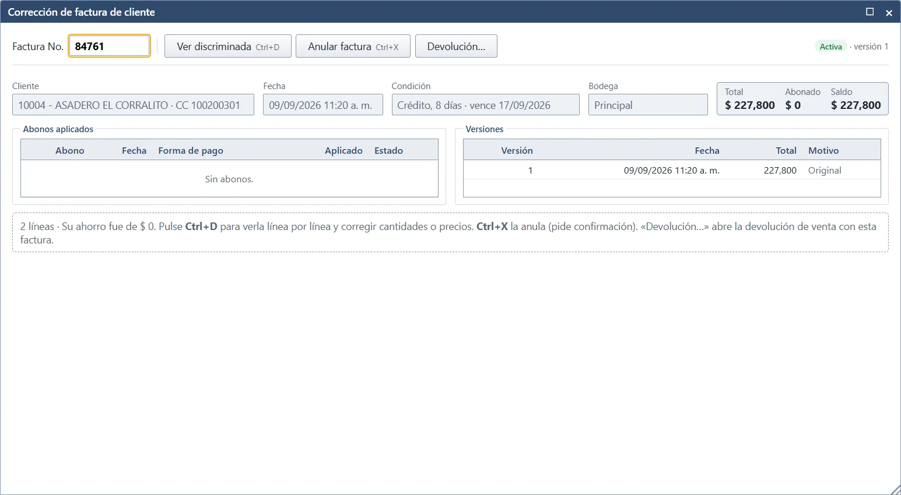
Al final del día ve el efectivo, las otras formas de pago y si cuadra con lo contado.
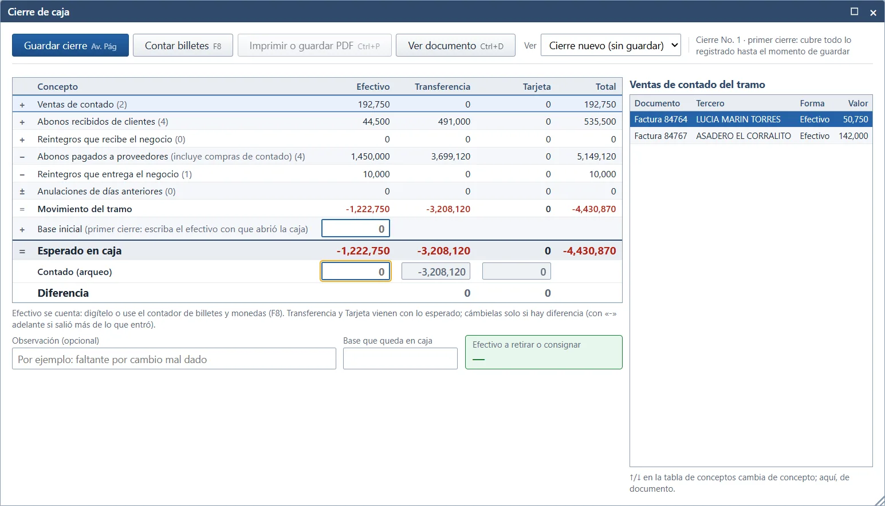
Puede dejar la factura al lado del inventario, o acomodar las ventanas en columnas.
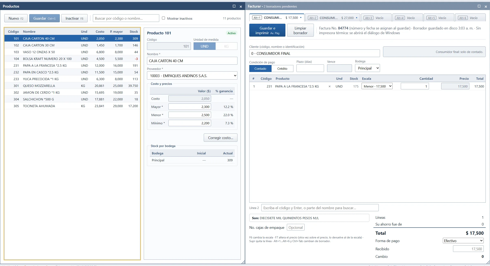
Puede guardar una copia ahora y restaurarla si algo sale mal. También puede dejar una copia diaria en otra carpeta, por ejemplo una memoria USB. Esa carpeta no se toca al desinstalar.
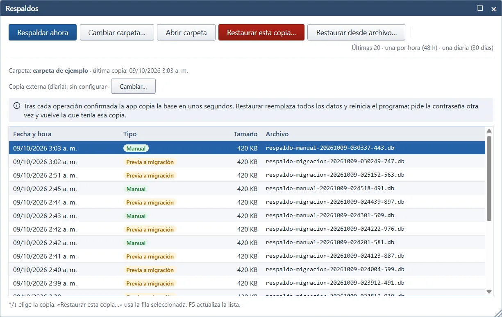
No hay una cuenta en la nube. La base de datos vive en ese equipo. Si se daña, el programa no pide la contraseña a ciegas: muestra las copias y deja restaurar una que sí sirva.
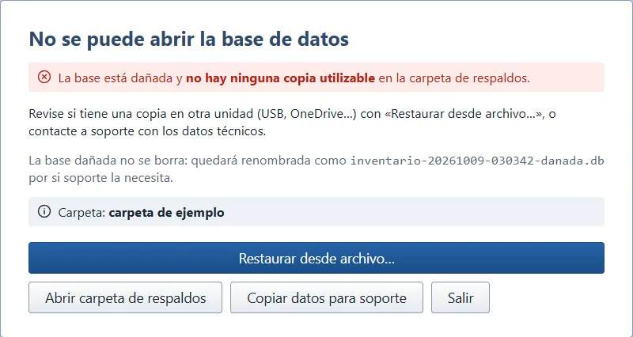
El instalador es para un usuario, sin permisos de administrador. Crea accesos en el escritorio y en el menú Inicio. La primera vez pide una contraseña del programa.
Nombre, NIT, dirección, teléfono, la impresora de tirilla y el número de la próxima factura.
Productos, clientes, proveedores, saldos de inventario y saldos de cartera se pueden cargar desde una hoja de cálculo, por columnas. Las facturas viejas no se copian una por una: entra el saldo con el que empieza.
No. No envía nada a la DIAN. Sirve para el control del negocio y para imprimir su tirilla.
Sí. No necesita internet para vender, consultar inventario ni hacer el cierre.
En esta versión hay una contraseña del programa. No hay usuarios separados.
No. Se anula o se corrige, y el cambio queda en el historial.
Por defecto se conservan la base y las copias. El desinstalador pregunta antes de borrarlas. La copia que usted dejó en otra carpeta no se toca.
Pide tu cotización
El WhatsApp y el correo se escriben en config.js antes de publicar.